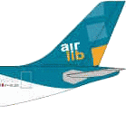

Il y a un an et demi, je vous parlais de l’évolution des compagnies aériennes desservant la Réunion. Le paysage aérien a depuis beaucoup changé. Février 2003 a enregistré le dépôt de bilan d’Air Lib, l’une des trois compagnies qui desservaient la Réunion depuis la métropole. Face à ces menaces de pénurie de places et devant des tarifs jugés trop élevés, l’aviation civile a déjà donné le feu vert à deux compagnies pour assurer des liaisons au départ de Paris et de Lyon. Air Austral et Air Bourbon (aujourd’hui disparue) vont en effet effectuer leurs vols inauguraux aux mois de mai et juin prochains. Air Austral est déjà connue puisqu’elle dessert plusieurs destinations dans la région. Air Bourbon est une toute nouvelle compagnie créée à l’initiative d’entrepreneurs réunionnais et qui exploitera un Airbus A340-200 tout neuf. Il ne reste plus qu’à savoir si la compagnie toulousaine Aéris (aujourd’hui disparue) obtiendra aussi cette autorisation demandée pourtant depuis longtemps.
L’offre en sièges risque donc d’augmenter et on sait que la demande est là avec les milliers de réunionnais en congés bonifiés et les touristes en recherche d’aventures. Espérons que les compagnies comprendront rapidement qu’il est préférable de remplir ses avions avec des places bon marché plutôt que de voyager à vide en proposant des tarifs prohibitifs.
Nouveau rebondissement durant l’été 2003, dans le ciel entre Roissy-en-France (aéroport Charles de Gaulle) et Gillots (aéroport Roland Garros) : Une association de passagers tente affréter un charter Aeris à un prix imbattable. La méthode est simple : On réserve sa place à une date unique, on paye et si l’avion est plein, on le prend, sinon l’association rembourse le billet. Simple et clair, l’association Coll’air (collair.org) explique tout sur son site. Premier vol prévu le 18 décembre 2003.
Les premiers vols de Coll’air en 2003 et 2004 ont été annulés faute de monde ou d’autorisation, Aeris a déposé le bilan, mais le concept tend à être de plus en plus connu.
Quant à Air Bourbon, la compagnie a déposé son bilan en novembre 2004. Vous pouvez retrouver l’histoire de cette compagnie (page Wikipedia créée par votre serviteur). Il ne reste plus que Air Austral et Air France à desservir régulièrement Paris depuis la Réunion. Peut-être que cette pénurie devrait remplir les fauteuils des avions affrétés par Coll’air. Ça risque encore de bouger dans le ciel réunionnais en 2005